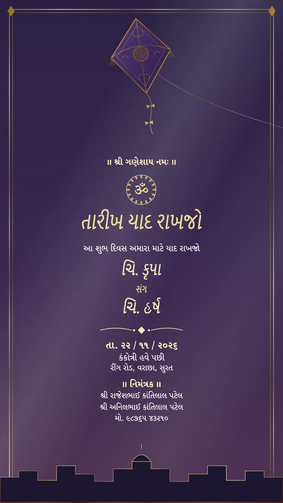

Designs › Save the Date › Uttarayan Kite Festival
Uttarayan Kite Festival: Gujarati save the date

- Ceremony: Save the Date
- Language: Gujarati
- God or sacred symbol: Lord Ganesha
- Format: WhatsApp image (1080 x 1920 px) and 5 x 7 inch print PDF
- Pages: 1 (the invitation card)
About this design
A deep purple sky with soft diagonal streaks of light, inside a thin gold double frame with small gold diamonds at the top corners. A violet diamond kite hangs at the top left, outlined in gold with a gold wheel at its centre and a short tail with two bows, its string trailing off to the right edge. Along the bottom runs a dark silhouette of old-city pol rooftops, flat roofs and steps with one small dome.
The Gujarati text opens with ॥ શ્રી ગણેશાય નમઃ ॥ and an Om emblem, then તારીખ યાદ રાખજો (remember the date) in large gold letters, and one line asking guests to keep the day for the family. The names have ચિ. before them, followed by the date in Gujarati numerals, કંકોત્રી હવે પછી (the kankotri will follow), the area and city, and a નિમંત્રક block with two names and a phone number.
Uttarayan, the January kite festival, is a huge occasion in Gujarat, and this card borrows its sky. Use it for a winter wedding, or for any Ahmedabad or Surat family who wants a save the date that feels local. Compared with Bandhani Festive Invite, the other Gujarati save the date, which is deep red with white tie-dye dots and a band of diyas, this one is darker and sparer, with the kite as the only picture. When the kankotri itself is ready, Gulabi Kankotri and Sandhya Pink Dusk Kankotri continue in Gujarati with the same Ganesha line.
Sample wording on this card
The card opens in the editor with this text. Change any line, or switch the card to another language.
॥ શ્રી ગણેશાય નમઃ ॥
તારીખ યાદ રાખજો
આ શુભ દિવસ અમારા માટે યાદ રાખજો
ચિ. કૃપા
સંગ
ચિ. હર્ષ
તા. ૨૧ / ૧૧ / ૨૦૨૭
કંકોત્રી હવે પછી
રીંગ રોડ, વરાછા, સુરત
નિમંત્રક
શ્રી રાજેશભાઈ કાંતિલાલ પટેલ
શ્રી અનિલભાઈ કાંતિલાલ પટેલ
મો. ૯૮૭૬૫ ૪૩૨૧૦